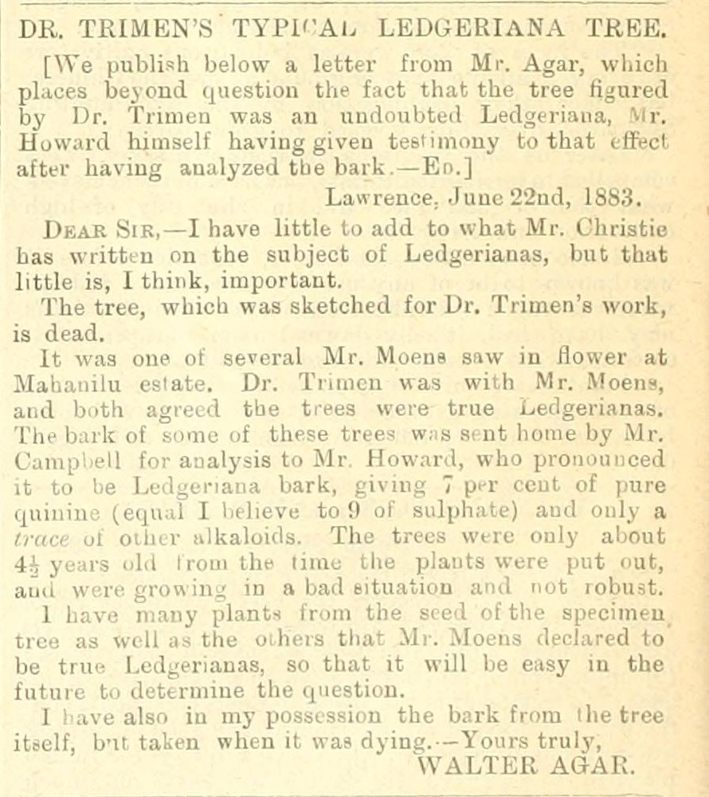
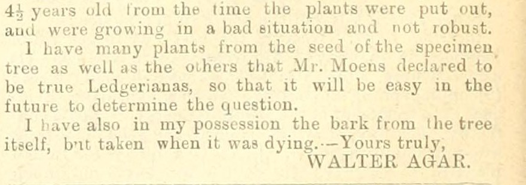
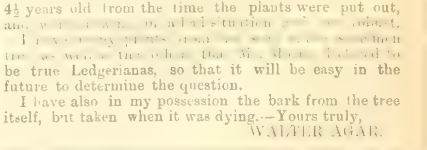

A working session with a coding agent
2026-10-15
| The question | The model does | You decide | |
|---|---|---|---|
| Clean | Is this what the page says? | Flags what reads oddly | Read the page and rule |
| Structure | What is a record here? | Proposes fields, fills them, keeps the quotes | What counts; did the meaning change? |
| Ground | Who is this? | Retrieves candidates with evidence | Supported, unresolved, or wrong |
Ten years ago the same three questions took five institutions and a text-mining pipeline, and scored F 0.6. What changed is who writes the pipeline and how fast the loop runs. What did not change is the right-hand column.

Walter Agar, The Tropical Agriculturist, 2 July 1883, p. 66. 234 words.
Henry Trimen, Director of the Royal Botanic Gardens, Ceylon, had illustrated a cinchona tree. A London quinine maker said it was the wrong species. Planters wrote in.
. . .
You need to know nothing about cinchona.
The page contains one decision of each kind.
| Min | ||
|---|---|---|
| 0–5 | The page | Trimen in the Colonial Office List; the letter |
| 5–20 | Structure | Model: propose a table, extract records. You: did the meaning change? |
| 20–30 | Ground | Model: retrieve candidates. You: supported, unresolved, wrong? |
| 30–45 | Clean | Together: the OCR against the page; what the correction becomes |
| 45–55 | Exercise | Three decisions. jimclifford.ca/trimen-workshop/review/ |
| 55–60 | Your data |
Read these passages. Propose a small table for studying the people and activities mentioned. Show two example records before processing the rest. Preserve the printed wording and source references. Keep inferred information separate from what the text states. Use local record identifiers and do not add Wikidata identifiers yet.
Use the agreed fields to process this sample. Save the code, instructions, and output. Report failed records and uncertain readings. Do not expand a person’s name unless the source provides the expansion; record any outside identification separately.
| Run | Model | Records | Flagged uncertain |
|---|---|---|---|
| A | Claude Sonnet 5.5, as coding agent | 85 | 8 |
| B | Claude Fable 5.1, as coding agent | 71 | 9 |
| C | Qwen3.8-27B, local, inside a script: the model used at scale | 13 | neither damaged sentence |
Run A, the bark that was analysed:
| printed_text | The bark of some of these trees was sent home by Mr. Campbell for analysis to Mr. Howard, who pronounced it to be Ledgeriana bark … |
| asserted_by | S04-P02 (signed “WALTER AGAR”) |
| inferred_note | Which trees supplied the bark is not stated beyond “some of these trees” |
The editor’s headnote: the tree figured by Dr. Trimen was an undoubted Ledgeriana, Mr. Howard himself having given testimony to that effect after having analyzed the bark.
Agar: The bark of some of these trees was sent home … to Mr. Howard.
I have also in my possession the bark from the tree itself.
A record saying Howard analysed the illustrated tree asserts a chemical result for a specimen never analysed. The whole quarrel rests on it.
. . .
Runs A and B kept them apart. Run C, the affordable model, wrote that Agar “confirms the tree sketched for Dr. Trimen was an undoubted Ledgeriana”. That is the editor’s sentence.
Its output reads well. Would you have noticed?
Look up candidate identities using the configured Wikidata tools and the Colonial Office List records. Save the retrieved evidence and lookup date. Show what supports the match, what conflicts, what is missing. Leave unresolved cases unresolved. Do not generate QIDs from memory.
| Printed | Candidate | Supports | Conflicts or missing |
|---|---|---|---|
| “HENRY TRIMEN”, Peradeniya | Q2462643, botanist 1843–1896 | Signature, address; CO List: director, Ceylon, 1880 | A brother, Roland, in both collections |
| “WALTER AGAR”, Lawrence | none | Two searches: a politician, a zoologist b. 1882, a temple, a thickening agent |
Trimen: supported, for these mentions. Agar: unresolved; keep the local record and the searches that were run. “Not found” is not “does not exist”.
Chandra 2, a vision-language OCR model. Tested on this corpus; good results. In the production corpus, this page:
… were put out, and were now in a full condition and in flower.
I have by my prints of the leaves of some of the trees …
The page:
… and were growing in a bad situation and not robust.
I have many plants from the seed of the specimen tree …
archive.org JPEG scan

Chandra: growing in a bad situation and not robust (3 of 3)
Same page rendered from the archive.org PDF (JBIG2 text mask; what the corpus was OCR’d from)

The two lines are mostly gone. Chandra: now in a full condition and in flower / in a very abnormal situation at the time. It filled the gap with language.
The old archive.org text layer, same sentences:
… ami were growing; in a bad situation and not robust. I have many plants from the seed of the specimen^ tree as well as the oiheis that Mr. Moens declared …
A model can tell you a sentence reads oddly. Only the page tells you what it says.
This example is wrong for the following reason: [explain]. Find other records that might have the same problem. Propose a correction and show which records it would affect. Rerun a small batch and show both corrected cases and previously accepted cases that changed.
jimclifford.ca/trimen-workshop/review/
| Clean | R3 | Does the OCR reading stand? Open the scan |
| Structure | R2 | Did Howard analyse the illustrated tree’s bark? |
| Ground | R1, R4 | Is “Dr. Trimen” Q2462643? Is there an item for Walter Agar? |
| extra | R5, R6 | A plant name string; two men one letter apart |
Write the reason. The reason is what becomes the rule. Zoom: Copy summary for chat. Room: hands up when asked.
| You decide | ||
|---|---|---|
| Clean | Is this what the page says? | Read the page and rule |
| Structure | What is a record here? | What counts; did the meaning change? |
| Ground | Who is this? | Supported, unresolved, or wrong |
jimclifford.ca/trimen-workshop — pages, saved outputs, exercise, worked answers, the wider research packet.
jimclifford.ca/trimen-workshop